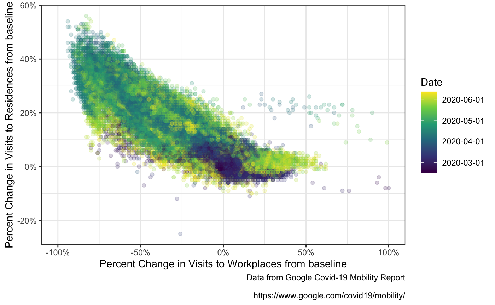

vignettes/google_work_v_play.Rmd
google_work_v_play.RmdGoogle’s data set is fascinating because it supplies information about a variety of different locations. The data is presented as percent change from a baseline of the average of a five week period from Jan 3 - Feb 6 2020.
The types of places are as follows (for subregions)
library(covid19mobility) library(ggplot2) library(dplyr) library(tidyr) goog <- refresh_covid19mobility_google_subregions() goog %>% pull(data_type) %>% unique #> [1] "retail_and_recreation_perc_ch" "grocery_and_pharmacy_perc_ch" #> [3] "parks_perc_ch" "transit_stations_perc_ch" #> [5] "workplaces_perc_ch" "residential_perc_ch"
Cool - we’ve got workplace and residential in there. I wonder if folk were spending more time at home and less time at work? The subregions data here is states/kantons/territories, etc. Google is pretty explicit that interregional comparisons are probably not valid, but, can we look at broad trends, with each region as a data point?
First, let’s just look at, well, everything!
goog_wp <- goog %>% filter(data_type %in% c("workplaces_perc_ch", "residential_perc_ch")) ggplot(goog_wp, aes(x = date, y = value, group = location_code)) + geom_line(alpha = 0.15, color = "lightgrey") + facet_wrap(~data_type) + theme_bw() + stat_smooth(group = 1, method = "gam", fill = NA, color = "black")+ labs(caption = "Data from Google Covid-19 Mobility Report\n https://www.google.com/covid19/mobility/")
Sure looks like inverse trends! Maybe? Let’s plot the correlation!
goog_wp_wide <- pivot_wider(goog_wp, names_from = data_type, values_from = value) ggplot(goog_wp_wide, aes(x = workplaces_perc_ch, y = residential_perc_ch, color = as.numeric(date))) + geom_point(alpha = 0.2) + scale_color_viridis_c("Date", breaks = as.numeric(pretty(goog_wp_wide$date)), labels = pretty(goog_wp_wide$date)) + scale_x_continuous("Percent Change in Visits to Workplaces from baseline", labels = function(x) paste0(x, '%'), limits = c(-100,100)) + scale_y_continuous("Percent Change in Visits to Residences from baseline", labels = function(x) paste0(x, '%')) + theme_bw() + labs(caption = "Data from Google Covid-19 Mobility Report\n https://www.google.com/covid19/mobility/")

From this point, it’s mixed models ahoy! But I’ll leave that to you all!